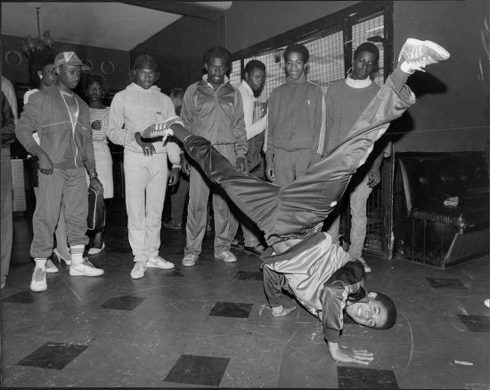

Původ street dance
Street dance vznikl v ulicích amerických měst, zejména v New Yorku a Los Angeles. Kořeny tohoto tance sahají do 70. a 80. let, kdy se lidé spontánně scházeli na ulicích, v parcích a komunitních centrech. Taneční styl byl úzce propojen s hip-hopovou kulturou, která zahrnovala i rap, graffiti a DJing. Lidé tančili především pro radost, sebevyjádření a pocit sounáležitosti. Každá komunita přidávala do tance své vlastní prvky, což vedlo ke vzniku různých stylů. Street dance se tak postupně vyvíjel jako autentická forma pohybu odrážející životní zkušenosti tanečníků.
Důležitou roli v jeho vzniku hrály afroamerické a latino komunity, které přinesly do tance rytmus, energii a unikátní kulturu. Původní street dance nebyl nikdy zamýšlen jako profesionální umění, ale jako svobodný způsob vyjádření. Velký vliv měly také hudební žánry jako funk, soul a později hip hop. Tyto hudební směry určovaly tempo, náladu i styl pohybů, které tanečníci využívali. Postupem času si street dance získal obrovskou popularitu a rozšířil se do celého světa. Přesto si stále udržuje svou pouliční atmosféru a důraz na osobitost.

Zpět na hlavní stranu:
Jiná podtémata: